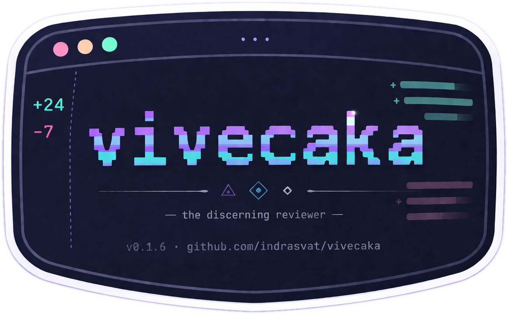
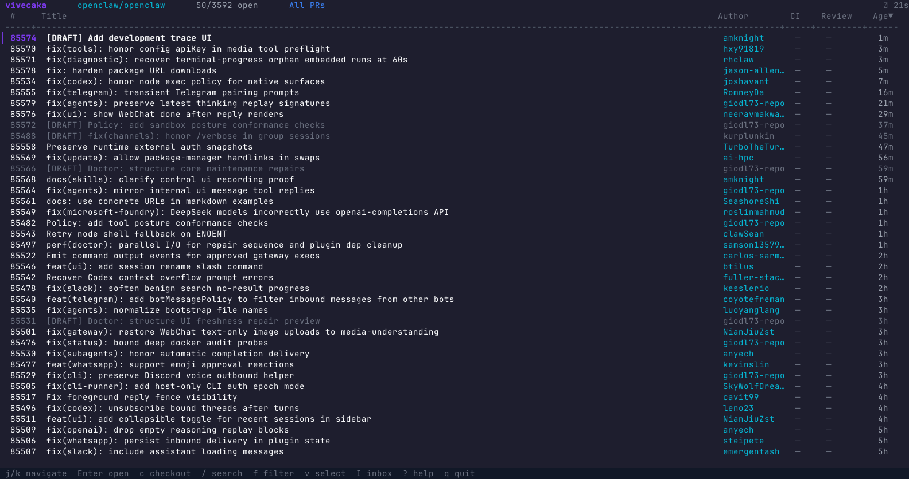
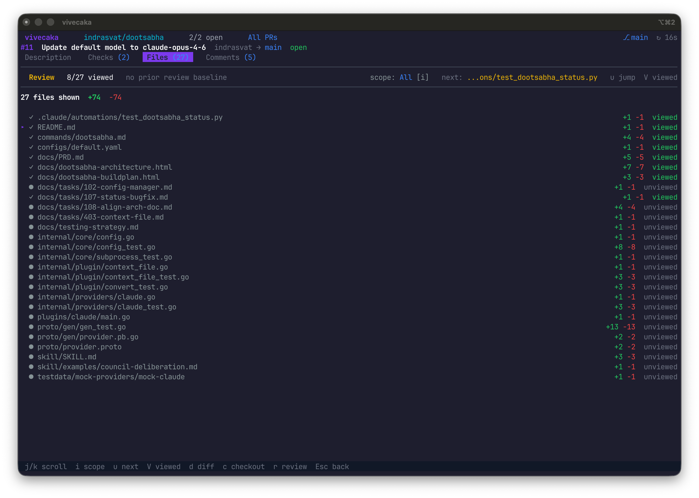
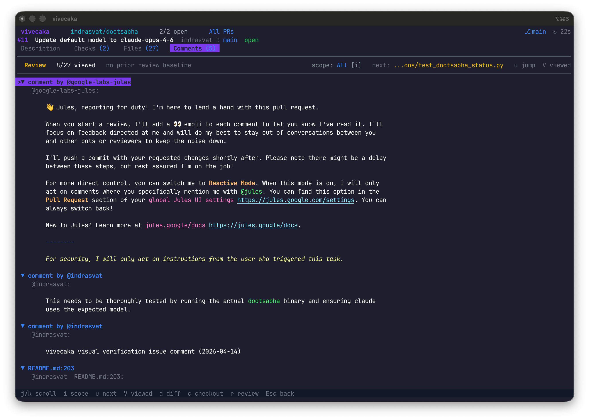
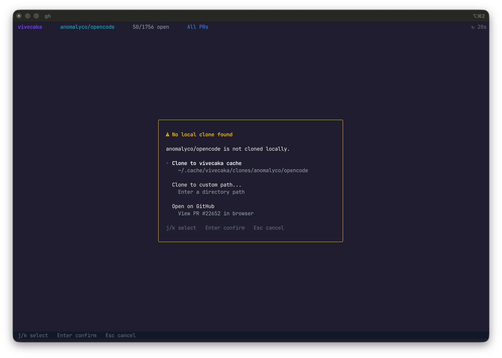
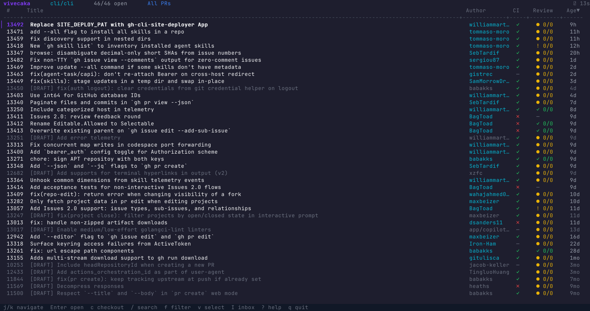

Queue
Open live PR lists from any GitHub repo.

vivecaka विवेचक GitHub$ vivecaka --repo=openclaw/openclaw
Queue, inspect, comment, review, and checkout without turning a code review into tab archaeology.
openclaw/openclaw
cli/cli
vercel/next.js


Open live PR lists from any GitHub repo.
Read status, checks, metadata, and changed files.
Move through comments, diffs, and incremental state.
Reply, resolve, submit, copy, open, or checkout.
The page uses high-resolution captures from live flows, not fake dashboard art.
Cycle scopes, jump to the next actionable file, and keep viewed state tied to the PR head.

Read, reply, resolve, and continue the review without leaving the TUI.

Reuse a clone, create one, open GitHub, or switch worktrees from the same flow.
